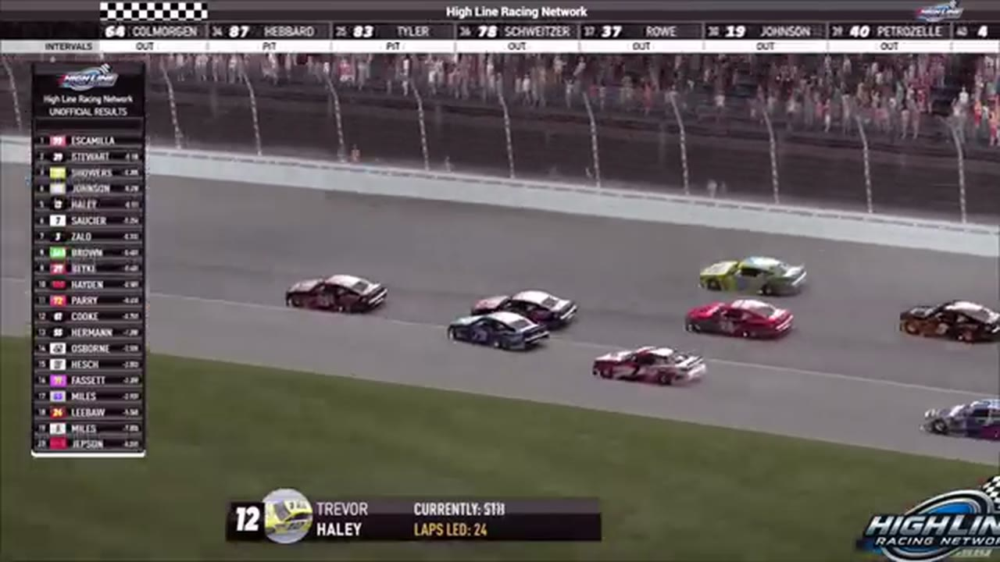

League Race at Chicagoland
Brandon Showers and Juan Escamilla divided the stages before the points leader took command of the final run.

- Date
- January 12, 2026
- Track
- Chicagoland
- Race tape
- 2h 2m
- Exact chapters
- 18
Juan Escamilla reaches the record
The Chicagoland results readout lists Juan Escamilla first and Trevor Haley third. The P2 driver then enters the booth under the scoring-name rendering 'Stewart,' self-identifies as Joe Quan, and is repeatedly congratulated for second place.
TAPE-SUPPORTED. Only explicitly supported positions are published; a nearby running order is never promoted into a finish.18 ways back into the race
Every link opens the complete broadcast at the reviewed timestamp. Chapter summaries are navigation claims unless explicitly marked as result-supported.
-
RESTART · OPENINGOPEN EXACT CUT
The Chicagoland field takes the opening green
S1 / R9 at 39:59: The official Chicagoland race broadcast reaches the opening green, with Trevor Haley and Todd Mays among the first drivers named. This cut begins before the launch and stays with the first live-race call.
-
STRATEGY · MIDDLEOPEN EXACT CUT
Chicagoland cycles through its first pit-road exits
HLRN returns live on lap 19 and watches the field leave pit road, checking Bryce Hinton, Matt Brown, and Ryan Wilson for clean launches. The original incident label did not match this primary-tape window.
-
STAGE · MIDDLEOPEN EXACT CUT
Stage 1 winner call at Chicagoland
S1 / R9 at 57:54: The broadcast enters a stage-scoring discussion at Chicagoland with Brandon Showers in the scoring call. The clip preserves the on-air timing or points call without promoting it into a complete stage result; the accepted feature result ledger remains separate.
-
STRATEGY · MIDDLEOPEN EXACT CUT
Pit strategy starts moving the Chicagoland field
S1 / R9 at 1:03:29: Pit timing starts to reorganize the field. The clip is a strategy receipt from the primary Chicagoland broadcast, not a reconstructed scoring sheet.
-
STRATEGY · MIDDLEOPEN EXACT CUT
Michael Jennings enters the Chicagoland pit-strategy swing
S1 / R9 at 1:13:17: Pit timing starts to reorganize the field, with Michael Jennings, Brian Hebert, and Jerry Fassett named in the sequence. The clip is a strategy receipt from the primary Chicagoland broadcast, not a reconstructed scoring sheet.
-
BATTLE · MIDDLEOPEN EXACT CUT
Brandon Showers and Juan Escamilla carry the Chicagoland lead battle
S1 / R9 at 1:15:37: The Chicagoland pack compresses in a front-pack fight while Brandon Showers and Juan Escamilla are named on the call. The chapter keeps the live battle intact and makes no finishing-order claim.
-
STAGE · MIDDLEOPEN EXACT CUT
Stage 2 winner call at Chicagoland
S1 / R9 at 1:22:13: The broadcast enters a stage-scoring discussion at Chicagoland with Juan Escamilla and Dylan Row in the scoring call. The clip preserves the on-air timing or points call without promoting it into a complete stage result; the accepted feature result ledger remains separate.
-
BATTLE · MIDDLEOPEN EXACT CUT
The Chicagoland lead pack goes four wide
S1 / R9 at 1:27:35: The Chicagoland pack compresses four wide while Juan Escamilla and Dylan Row are named on the call. The chapter keeps the live battle intact and makes no finishing-order claim.
-
RESTART · CLOSINGOPEN EXACT CUT
Chicagoland's scheduled caution freezes Trevor Haley in front
The scheduled caution appears in turn four as the booth expected. HLRN reads Trevor Haley ahead of Juan Escamilla, Joe Quan under the Stewart scoring name, and Joshua McKenna; those leaders are the running order, not participants in a caution replay.
-
INCIDENT · CLOSINGOPEN EXACT CUT
Randy Switzer and Cory Cook surface in the Chicagoland caution replay
S1 / R9 at 1:35:31: The caution sequence centers the replay call on Randy Switzer and Cory Cook. This is a source-bounded incident window; it preserves what the booth reviews without assigning unsupported fault.
-
BATTLE · CLOSINGOPEN EXACT CUT
Justin Lee Pearson and Brandon Bikey carry the Chicagoland lead battle
S1 / R9 at 1:37:43: The Chicagoland pack compresses in a front-pack fight while Justin Lee Pearson, Brandon Bikey, and Timothy Tyler are named on the call. The chapter keeps the live battle intact and makes no finishing-order claim.
-
RESTART · CLOSINGOPEN EXACT CUT
Trevor Haley and Eli Zallo bring Chicagoland back to green
S1 / R9 at 1:39:23: Trevor Haley, Eli Zallo, and Randy Showers are in the booth's front-pack call as Chicagoland returns to green. The cut keeps the restart launch and the first lap of lane development together.
-
FINISH · CLOSINGOPEN EXACT CUT
Timothy Tyler enters the final-lap decision
S1 / R9 at 1:43:11: The white flag opens the final-lap decision at Chicagoland, with Timothy Tyler named in the decisive group. The cut continues through the immediate finish call on the full primary broadcast.
-
POSTRACE · CLOSINGOPEN EXACT CUT
Trevor Haley and Randy Showers anchor the Chicagoland post-race result review
S1 / R9 at 1:47:47: The reviewed live-race close has passed before this Chicagoland result booth review begins with Trevor Haley, Randy Showers, Tristan Johnson, and Eli Zallo named in the discussion. It remains post-race context, not a new incident, stage, strategy call, finish, or result receipt.
-
RESULT · CLOSINGOPEN EXACT CUT
Juan Escamilla is confirmed atop the Chicagoland results
The Chicagoland results readout lists Juan Escamilla first and Trevor Haley third. The P2 driver then enters the booth under the scoring-name rendering 'Stewart,' self-identifies as Joe Quan, and is repeatedly congratulated for second place.
-
POSTRACE · CLOSINGOPEN EXACT CUT
Randy Switzer and Juan Escamilla return in the Chicagoland post-race contact review
S1 / R9 at 1:48:52: The reviewed live-race close has passed before this Chicagoland incident booth review begins with Randy Switzer and Juan Escamilla named in the discussion. It remains post-race context, not a new incident, stage, strategy call, finish, or result receipt.
-
INTERVIEW · CLOSINGOPEN EXACT CUT
Trevor Haley describes fighting back to the Chicagoland top five
Trevor Haley joins winner Juan Escamilla in the booth and describes losing the lead, working back through the field, and racing his teammates late. The interview remains first-person context around the accepted result ledger.
-
POSTRACE · CLOSINGOPEN EXACT CUT
Tristan Johnson returns in the Chicagoland post-race contact review
S1 / R9 at 1:54:43: The reviewed live-race close has passed before this Chicagoland incident booth review begins with Tristan Johnson named in the discussion. It remains post-race context, not a new incident, stage, strategy call, finish, or result receipt.
All 20 official winners are backed by position-specific calls in a primary broadcast or an HLRN-authored companion episode. Complete finishing orders, points, and starts remain open until owner records are supplied.